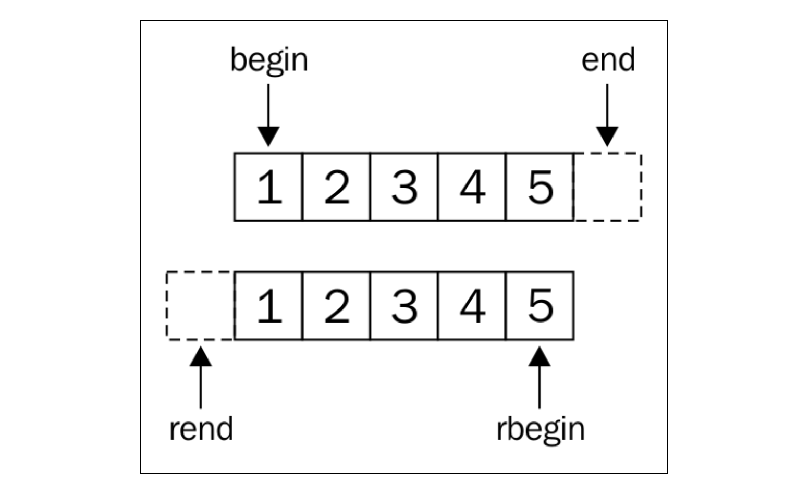
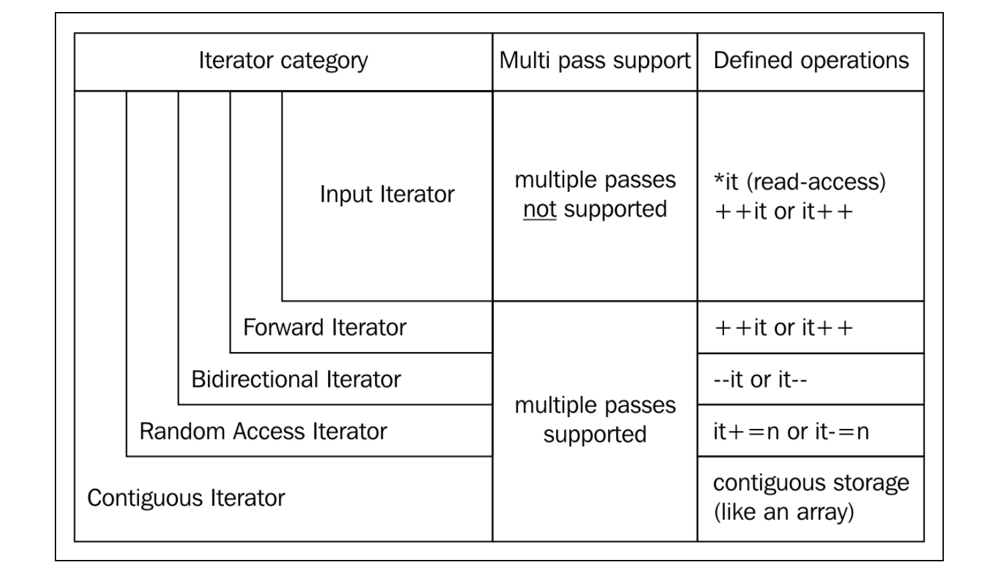
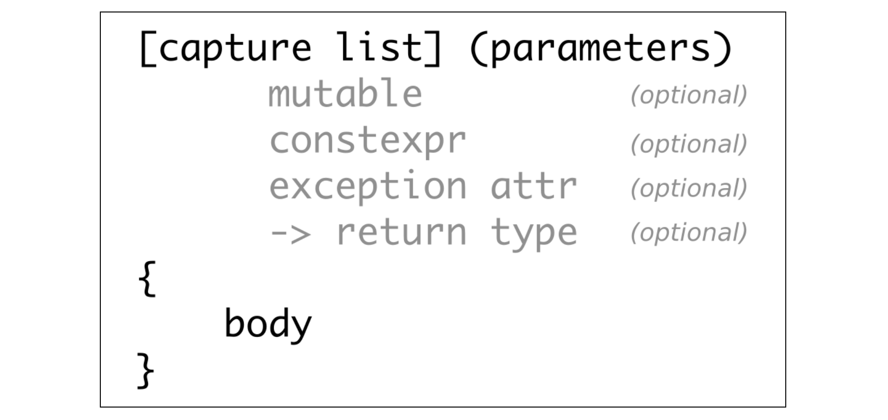
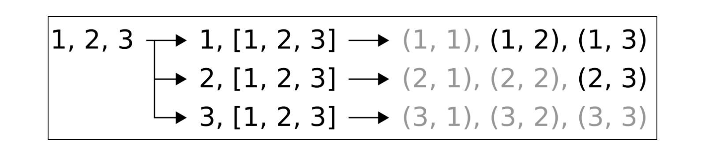

《C++17 STL Cookbook》读书笔记（第 3-4 章）
接上篇。
Chapter 3: Iterators
迭代器类别
- 迭代器分类：
- 输入\输出迭代器（Input Iterator）：std::istream_iterator；
- 前向迭代器（Forward Iterator）：std::forward_list；
- 双向迭代器（Bidirectional Iterator）：std::list；
- 随机访问迭代器（Random Access Iterator）：std::vector \ std::deque；
- 连续迭代器（Contiguous Iterator）：数据存放于连续内存中。如 std::vector；
- 可变迭代器（Mutable Iterator）：即可从中读入（输入），也可向其写入（输出）。如从非 const 容器获取的迭代器；

构建自己的可迭代范围
- 基于范围的 for 循环（Ranged-based for）是一种语法糖（Syntax Sugar），最终会被扩展为基于迭代器的普通 for 循环；
for (auto x : range) { code_block; }
将被扩展为如下类似代码：
{
auto __begin = std::begin(range);
auto __end = std::end(range);
for ( ; __begin != __end; ++__begin) {
auto x = *__begin;
code_block
}
}
- 自定义迭代器实现（满足实现 operator!= \ operator++ \ operator*）：
class NumIterator {
int i;
public:
explicit NumIterator(int position = 0) : i {position} {}
int operator*() const { return i; }
NumIterator& operator++() {
++i;
return *this;
}
bool operator!=(const NumIterator& o) const { return i != o.i; }
};
class NumRange {
int from;
int to;
public:
NumRange(int from, int to) : from{from}, to{to} {}
NumIterator begin() { return NumIterator{from}; }
NumIterator end() { return NumIterator{to}; }
};
int main(int argc, char **argv) {
for (const auto& v : NumRange{1, 11}) {
std::cout << v << std::endl;
}
return 0;
}
- 推荐使用 std::beign 和 std::end，而非调用容器对象成员函数的方式来获取首元素迭代器以及尾后迭代器（STL 提供的方法可以兼容原生数组等其他类型）；
使自定义迭代器符合 STL 的迭代器分类
- 通过为 std::iterator_traits 提供对应特化的方式来实现；
namespace std {
template<>
struct iterator_traits<NumIterator> {
using iterator_category = std::forward_iterator_tag; // iterator type;
using value_type = int; // value type the iterator iterates;
// using difference_type = ...
// using pointer = ...
// using reference = ...
};
}
- 在 C++17 以前，**自定义的迭代器一般会继承自 std::iterator<…>**。自 C++17 起，该方式已经被废弃；
使用迭代器适配器来填充容器
- 常用类型：
- std::back_insert_iterator：隐式调用容器的 push_back 方法来插入元素；
- std::front_insert_iterator：隐式调用容器的 push_front 方法来插入元素（对于诸如 std::vector 等容器可能需要移动所有元素，引发性能问题）；
- std::insert_iterator：随机插入迭代器；
- std::istream_iterator：可配合其他 std::istream 来使用；
- std::ostream_iterator：可配合其他 std::istream 来使用；
使用迭代器来实现算法
- Fibonacci 迭代器：
class FibIt {
friend class FibRange;
size_t i {0};
size_t a {0};
size_t b {1};
explicit FibIt(size_t i_) : i{i_} {} // hiding the special usage of this constructor;
public:
FibIt() = default;
size_t operator*() const { return b; }
FibIt& operator++() {
const size_t old_b {b};
b += a;
a = old_b;
++i;
return *this;
}
bool operator!=(const FibIt& o) const { return i != o.i; }
};
template<>
struct std::iterator_traits<FibIt> {
using iterator_category = std::forward_iterator_tag;
using value_type = size_t;
};
class FibRange {
size_t end_n;
public:
FibRange(size_t end_n_) : end_n(end_n_) {}
FibIt begin() const { return FibIt{}; }
FibIt end() const { return FibIt{end_n}; }
};
int main(int argc, char **argv) {
for (const size_t i : FibRange(10)) {
std::cout << i << std::endl;
}
return 0;
}
使用反向迭代器
int main(int argc, char **argv) {
std::list li {1, 2, 3};
std::copy(
std::rbegin(li),
std::rend(li),
std::ostream_iterator<int>(std::cout, ", "));
// mimic backward iterator with forward iterator;
std::copy(
std::make_reverse_iterator(std::end(li)),
std::make_reverse_iterator(std::begin(li)),
std::ostream_iterator<int>(std::cout, ", "));
return 0;
}
- 正向迭代器与反向迭代器的区别：

使用 Sentinel 控制迭代器的遍历
- Sentinel 可以理解为一个具有自定义逻辑的“尾后迭代器”，且首元素迭代器与尾后迭代器的类型不需要完全相同；
class cstringIterSentinel {};
class cstringIter {
const char* s {nullptr};
public:
explicit cstringIter(const char* str) : s{str} {}
char operator*() const { return *s; }
cstringIter& operator++() {
++s;
return *this;
}
bool operator!=(const cstringIterSentinel) const {
return s != nullptr && *s != '\0'; // termination condition;
}
};
class cstringRange {
const char* s {nullptr};
public:
cstringRange(const char* str) : s {str} {}
cstringIter begin() const { return cstringIter{s}; }
cstringIterSentinel end() const { return {}; }
};
int main(int argc, char **argv) {
if (argc < 2) { exit(EXIT_FAILURE); }
for (char c : cstringRange(argv[1])) {
std::cout << c << std::endl;
}
return 0;
}
检查迭代器的有效性
- 如 std::vector 等容器在 reserve 可用空间时若超过当前 capacity，则所有元素会被移动到新申请的空间中。指向原容器的迭代器将失效；
- 可以借助编译器提供的 Sanitizer 来检测代码的有效性；
实现一个 zip() 迭代器
- 可以使用 std::valarray 实现更优雅的“点积”；
class ZipIter {
using itType = std::vector<double>::iterator;
itType itX;
itType itY;
public:
explicit ZipIter(itType itX, itType itY) : itX(itX), itY(itY) {}
ZipIter& operator++() {
++itX;
++itY;
return *this;
}
bool operator!=(const ZipIter& o) const { return itX != o.itX && itY != o.itY; }
bool operator==(const ZipIter& o) const { return !operator!=(o); }
std::pair<double, double> operator*() const { return {*itX, *itY}; }
};
template<>
struct std::iterator_traits<ZipIter> {
using iterator_category = std::forward_iterator_tag;
using value_type = std::pair<double, double>;
using difference_type = long int;
};
class Zipper {
using vecType = std::vector<double>;
vecType &vecX;
vecType &vecY;
public:
Zipper(vecType &vecX, vecType &vecY) : vecX(vecX), vecY(vecY) {}
auto begin() const { return ZipIter{std::begin(vecX), std::begin(vecY)}; }
auto end() const { return ZipIter{std::end(vecX), std::end(vecY)}; }
};
int main(int argc, char **argv) {
std::vector x {1.0, 2.0, 3.0};
std::vector y {2.0, 3.0, 4.0};
Zipper z {x, y};
const auto dotProduct = std::accumulate(
std::begin(z),
std::end(z),
0.0,
[](double sum, const auto &p) {
return sum + p.first * p.second;
});
std::cout << dotProduct << std::endl;
return 0;
}
Chapter 4: Lambda Expressions
使用 lambda 表达式

- 组成部分：
- 捕获列表：
[=, &b, i{22}, this] () {}，b 通过引用捕获；i 为初始化在 lambda 对象内的一个 const 成员（没有 mutable），类型将由值类型进行推导；this 通过拷贝方式捕获；其他值通过拷贝方式捕获； - mutable 关键字：可以在 lambda 内修改以拷贝方式捕获的成员；
- constexpr 关键字：lambda 可以编译时求值（某些情况下，编译器会隐式将 lambda 进行编译时求值）；
- noexcept 关键字：指明 lambda 是否会产生异常；
- 返回值：显式指明 lambda 的返回值类型；
- 捕获列表：
int main(int argc, char **argv) {
auto x ([]() { return 1; });
auto y ([] { return 2; });
auto plus ([](auto l, auto r) { return l + r; });
// closure variable;
auto counter ([count = 0]() mutable { return ++count; });
std::cout << counter() << std::endl;
// closure reference;
int v {10};
auto incrementer ([&v] { ++v; });
// currying;
auto plusTen ([=](int x) { return plus(10, x); });
std::cout << plusTen(10) << std::endl;
// constexpr;
constexpr int i = 100;
constexpr int j = ([i]() constexpr { return i + 10; })();
int arr[j] = {1, 2, 3};
return 0;
}
使用 std::function 为 lambda 提供多态支持
- 当被包装的函数对象（Function Object）体积过大时（比如由于捕获了过多的变量），std::function 会在堆上分配一块内存来专门存放该对象；
template<typename T>
static auto consumer (T& container) {
return [&](auto value) {
container.push_back(value);
};
}
int main(int argc, char **argv) {
std::deque<int> d;
std::list<int> l;
std::vector<int> v;
const std::vector<std::function<void(int)>> consumers {
consumer(d), consumer(l), consumer(v)
};
for (size_t i {0}; i < 10; ++i) {
for (auto& consume : consumers) {
consume(i);
}
}
return 0;
}
函数连接（流水线拼接）
- 效果类似于 Haskell 中的 “Function Concatenation”；
template<typename T, typename ...Ts>
auto concat(T t, Ts ...ts) {
if constexpr (sizeof...(ts) > 0) {
return [=](auto ...params) {
return t(concat(ts...)(params...));
};
} else {
return t;
}
}
int main(int argc, char **argv) {
auto twice ([](int i) { return i * 2; });
auto thrice ([](int i) { return i * 3; });
auto combined (concat(twice, thrice, std::plus<int>{}));
std::cout << combined(2, 3) << std::endl;
return 0;
}
使用“逻辑与”创建复杂谓词（Predicates）结构
template<typename A, typename B, typename F>
auto combine(F binaryFunc, A a, B b) {
return [=](auto param) {
return binaryFunc(a(param), b(param));
};
}
int main(int argc, char **argv) {
std::cout << combine(
std::logical_and<>{},
[](int v) { return v > 0; },
[](int v) { return v <= 100; })(10);
return 0;
}
一个函数应用于多个参数 / 多个函数应用一个参数
- std::initializer_list 只是用来满足函数调用的解包（Unpack）形式，构造产生的临时对象不需要被保留；
- 函数调用的返回值不需要保留，并且用 0 作为代替来构造 std::initializer_list 临时值；
- 在 std::initializer_list 中被调用的函数能够保证按照严格顺序被调用；
template<typename ...Ts>
static auto multicall(Ts ...funcs) {
return [=](auto x) {
(void) std::initializer_list<int>{
((void) funcs(x), 0)...
};
};
}
template<typename T, typename ...Ts>
static auto forEach(T f, Ts ...xs) {
(void) std::initializer_list<int>{
((void) f(xs), 0)...
};
}
int main(int argc, char **argv) {
forEach([](int x) { std::cout << x << std::endl; }, 1, 2, 3);
multicall(
[](int x) { std::cout << x << std::endl; },
[](int x) { std::cout << x + 10 << std::endl; },
[](int x) { std::cout << x + 20 << std::endl; }
)(10);
return 0;
}
实现 std::transform_if
- map：*(E → F) × Seq<E> → Seq<F>*
- filter：*(E → boolean) × Seq<E> → Seq<E>*
- reduce：*(F × E → F) × Seq<E> × F → F*
- reducer 的一种常见形式：func(accum, input)；当其作为参数传给 map 以及 filter 时，仍然返回类似的形式;
template<typename T>
auto map(T fn) {
return [=] (auto reduceFn) {
return [=] (auto accum, auto input) {
return reduceFn(accum, fn(input));
};
};
}
template<typename T>
auto filter(T predicate) {
return [=] (auto reduceFn) {
return [=] (auto accum, auto input) {
if (predicate(input)) {
return reduceFn(accum, input);
} else {
return accum;
}
};
};
}
int main(int argc, char **argv) {
std::istream_iterator<int> it {std::cin};
std::istream_iterator<int> endIt;
auto copyAndAdvance (
[](auto it, auto input) {
*it = input;
return ++it; // no-op for std::ostream_iterator to be incremented;
});
std::accumulate(it, endIt,
std::ostream_iterator<int>{std::cout, ", "},
filter([](int i) { return i % 2 == 0; })(
map([](int i) { return i * 2; })(copyAndAdvance)));
return 0;
}
实现两个集合的“笛卡尔积（Cartesian Product）”

- callCart 对应着上述每一行的独立计算过程，
x < rest过滤了冗余的结果； - cartesian 将 callCart 对应的每一行处理过程重复多次（两个 unpacking 过程可以看做成二维的运算：一个对应行展开，一个对应列展开）；
static void print(int x, int y) {
std::cout << "(" << x << ", " << y << ")\n";
}
int main(int argc, char **argv) {
constexpr auto callCart (
[=](auto f, auto x, auto ...rest) constexpr {
(void) std::initializer_list<int>{
(((x < rest) ? (void) f(x, rest) : (void)0), 0)...
};
}
);
constexpr auto cartesian ([=](auto ...xs) constexpr {
return [=] (auto f) constexpr {
(void) std::initializer_list<int>{
((void) callCart(f, xs, xs...), 0)...
};
};
});
constexpr auto printCart (cartesian(1, 2, 3));
printCart(print);
return 0;
}
文章评论（Utterances）